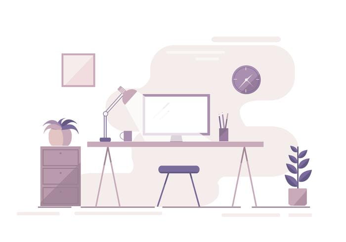

<!-- <app-navigation (click)="sidenav.toggle()">
</app-navigation> -->
<div [ngClass]="{'unicorn-dark-theme': isUnicornDarkTheme}" >
<mat-sidenav-container class="example-container" autosize>

    <mat-sidenav [class.sidenav_half]=" !isFullOpen" #sidenav [class.sidenav_full]="isFullOpen" class="my_shadow1"
        position="start" [mode]="(isHandset$ | async) ? 'over' : 'side'" [opened]="(isHandset$ | async) === false">
        <mat-toolbar style="min-height: 45px!important;" class="sidenav_toolbar" color="accent">
            <mat-toolbar-row>
                <button *ngIf="(isHandset$ | async) === false" mat-icon-button (click)="sidenavToggle()">
                    <mat-icon>menu</mat-icon>
                </button>

                <a routerLink=" " class="example-icon">
                    <div class="logo layout">
                        
                    </div>
                </a>
                <span class="example-spacer"></span>


                <span mat-line>Sanskar</span>


                <!-- <a  routerLink="/profile" routerLinkActive="myactive">
                    <div class="profile__picture"></div>
                    </a> -->


            </mat-toolbar-row>
        </mat-toolbar>
        
            <app-sidenavmenus></app-sidenavmenus>
        
    </mat-sidenav>

    <!-- ------------ -->
    <mat-sidenav-content>
        <mat-toolbar color="primary" *ngIf="isHandset$ | async">
                <mat-toolbar-row>
            <button type="button" aria-label="Toggle sidenav" mat-icon-button (click)="sidenav.toggle()">
                <mat-icon aria-label="Side nav toggle icon">menu</mat-icon>
            </button>
            <div class="example-spacer" style="flex: 1 1 auto"></div>
            <app-nav></app-nav>
        </mat-toolbar-row>
        </mat-toolbar>
        <mat-toolbar style="min-height: 45px!important;" *ngIf="(isHandset$ | async) === false" color="primary"  >
                <mat-toolbar-row>
            
            <div class="example-spacer" style="flex: 1 1 auto"></div>
            <app-nav></app-nav>
        </mat-toolbar-row>
        </mat-toolbar>
        <main>
<!-- <div style="margin:0px auto"></div> -->
       <div class="container">   
     <router-outlet>


            </router-outlet>
        </div> 
        </main>
    </mat-sidenav-content>

</mat-sidenav-container>
</div>